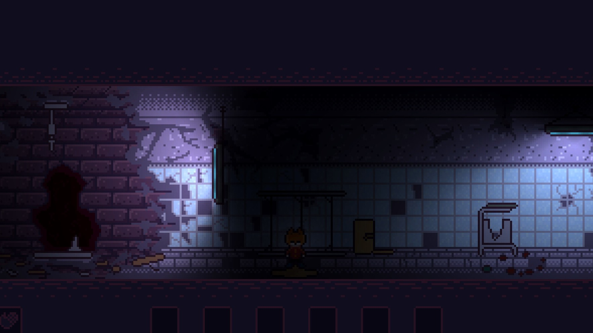

p.2 — what happened
Woke up where the walls sweat.
No dramatic intro. Tile, damp, a buzzing terminal. The file on screen described the room I was standing in — word for word. Dark. Locked. Silent.
I changed one word and the ██████ changed with it. I'm not writing which word first. You'll do it wrong.
The halls after that don't behave. Some rooms are kind: a fire, rain on glass. Some lean wrong and you feel it behind your teeth before you see anything. I started marking the kind ones on the back of my hand.
- § 01 — there is more than one way out of every room. The green lever taught me that.
- § 02 — everything has something to say if you look twice. Even the soap.
- § 03 — if your gut pulls, follow it. Sanity goes fast down here.
P.S. if you find my spare battery, keep it. you'll need it.

filed under: slow horror · pixel rooms · choices that stick · multiple endings · no combat, just nerves
tally, week three —rooms mapped 14batteries kept 3levers pulled 2deaths 23soap understood 0